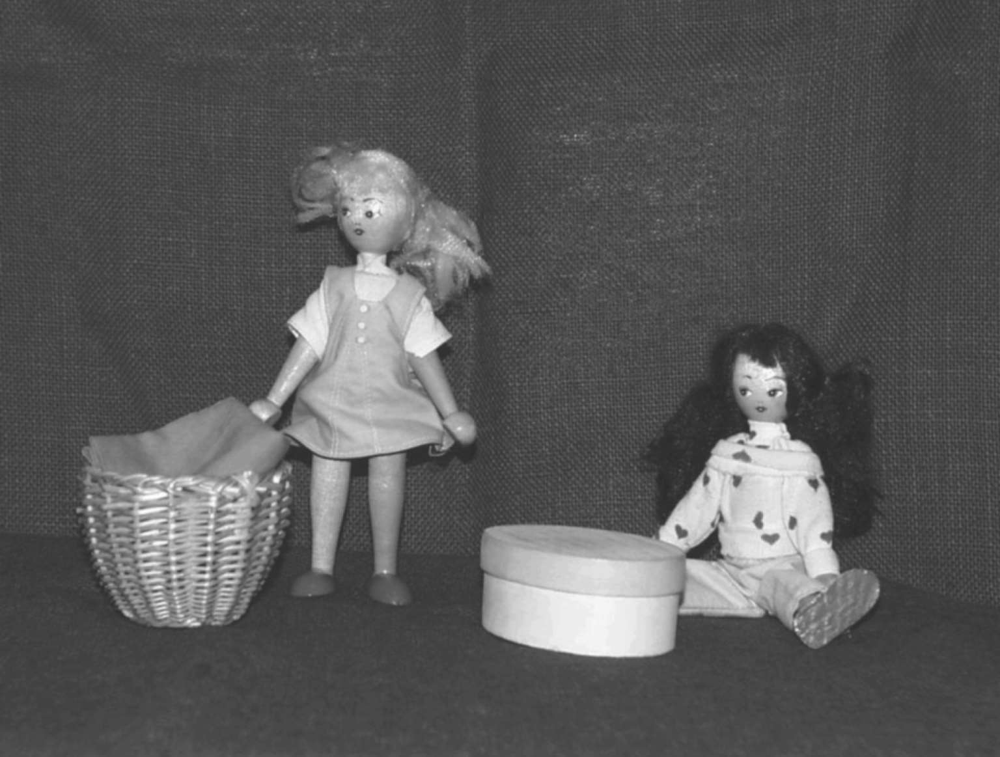
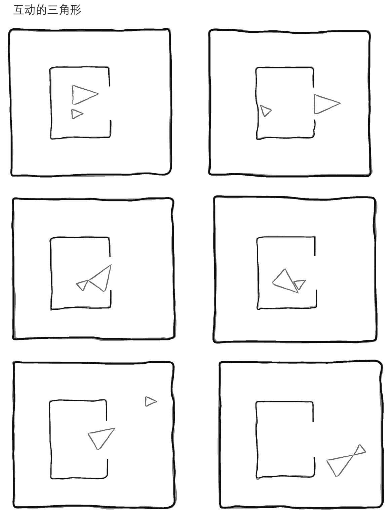
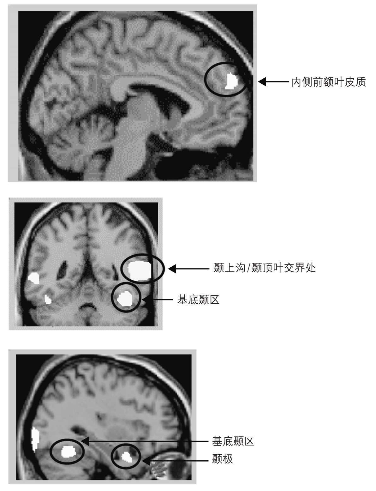

让我们回到马克·哈登的小说《深夜小狗神秘事件》。书中主人公克里斯托弗能解决复杂的逻辑问题，但他不能理解对别人来说明白无误的社交信号。他不知道谁在说谎，谁想帮助他。他为什么会有这些问题？与目前为止我们遇到的很多问题不同，这个问题是有答案的。
这本书只是个故事，但书中描述的实验却在大约二十年前就实施了。新理论要得到彻底验证，新思想要广为人知，是需要那么长的时间。科学突破极少发生在一夜之间，也极少由单个人完成。恰恰相反，它们通常依赖很多人很多年的努力。
科学家们是如何研究像克里斯托弗这种人的呢？他们如何发现他那些奇怪问题的原因？如果读过那本书，你可能还记得克里斯托弗只能用逻辑推理来理解他父亲或是其他任何人的所知所想。只有患有自闭症的人才不得不这样做。而我们的读者中大多数人都不需要逻辑推理，反过来我们有自动显示器。就像一个卫星导航系统告诉你在空间中位置如何，大脑有个系统可以告诉你跟其他人的关系。我们就是知道故事中的人或角色有愿望，有感情，有想法。而且大多数时候我们能准确知道这些想法是什么，我们大多数人似乎天生就会读心术。然而，克里斯托弗不会。
正常情况下，大脑和思维的社交部分使我们自动对他人的行为做出反应。我们不需要思考，但我们通过考虑别人所想、所需就能解释人们在做的事情。这曾被戏称为“心智化”或“心智理论”。在自闭症当中，这个心智化机制出了问题。
这一大理论做过的第一次测试在图9中得到说明。测试是这样的：萨利有个篮子，安妮有个盒子。萨利有块石头，被她放进了篮子里。然后她出去玩了。当萨利不在时，调皮的安妮把篮子里的石头放进了自己的盒子里。萨利要回来了。她想玩石头。她会去哪里找她的石头？大多数五岁及以上的孩子会极其自信地给出答案。萨利会去篮子里找她的石头，因为她认为石头在篮子里。她所认为的现在错了；我们知道石头其实在哪，但萨利不知道。
与之相反，即使是很聪明的自闭症孩子也觉得萨利—安妮测试很难。他们往往说萨利会去石头真正在的地方去找。他们不会考虑萨利那已经过时了的确信。他们最终会知道究竟发生了什么，但要花费比正常发育的孩子长得多的时间，这种情形简单而能自动理解，但他们获知的与此不同。在自闭症当中，心智化从来不是轻轻松松自动发生的。一位特别聪明的自闭症人士讲过他在社交互动时的困难：“我在一次互动后要坐下来努力弄明白意图、想法等等。我的确需要‘离线’，事后才能弄明白，而不是实时完成。”

图9 萨利—安妮测试［这个测试被S.巴伦—科恩、A.莱斯利和U.弗里斯（1985）使用］
所以说，学习的确在进行，但通常会弄错最重要的点。例如，一个自闭症年轻人的妈妈说：“我教导他当他伤害别人感情时要道歉。他也总是道歉—只是不知道什么时候会伤害感情。他会一直道歉。”但也有很多病例要难理解得多。有个年轻人总是盯着别人，因为他相信只有盯着别人才能让人知道他的想法。
萨利—安妮测试是一种明显而又完全有意识的思维读取形式，这种形式在发育过程中较晚习得。近来关于心智化的典型发育的研究，已成功找到在婴儿一到两岁之间有这项能力的证据。这个证据是从幼童观看某个场景时的眼神凝视类型得到的，这有点类似于萨利—安妮测试。比如，当萨利去石头真正在的地方而不是她以为在的地方找时，婴儿们凝视更久—还表现出惊讶。因此很显然，他们对于萨利将会去哪里找石头有强烈期待，看见结果不同时会非常好奇。正在进行的研究表明，自闭症孩子并不拥有这项看起来完全无意识的心智读取能力。进一步说，他们能否习得这项能力也让人生疑。缺乏直觉性的心智化曾被戏称为心盲。
大脑中的心智化
这一大理论已经带来从未预料到的大脑系统的发现。这个大脑系统致力于心智化。它是借助大脑扫描仪的帮助而发现的。挑战之一是制造刺激，这种刺激会引发自然而然的心智化，再将它们与不会引发自然而然心智化的刺激对比。在此对比中额外的大脑活动告诉我们，大脑的哪些区域参与了心智化。这些区域在图11中标示了出来。
结果显示，仅仅对人播放动画片就能产生这种对比。电影中的演员是两个小三角形。在有些电影中他们如图10那样互动，在另一些电影中，他们的活动是任意的。
第一大理论的问题
在过去的很多年里，心盲的理论得到了大量测试，但理论仍有松散之处留待日后收尾。主要批评之一是，并非自闭症谱系的所有人都有心智化的困难。我们不妨假定，批评不仅是基于使用萨利—安妮测试。不管怎样，这仅仅是一个测试，要想测试心智化，需要严格控制条件下的一系列测试。

图10 运动会给人幻觉，认为两个三角形是彼此互动的生物。以上截图中的动画片段会触发以下理解：大三角形（母亲）和小三角形（孩子）在屋里。妈妈出门，温柔劝说最初不情愿的孩子也出去。最后孩子尝试出门，两人在外面开心玩耍

图11 正常大脑中心智化活动的大脑区域。在自闭症人士和弱联结的人当中这些区域的活动减弱
这一大理论面临的第二个批评在于，那些不自闭但有其他残疾的人同样可能完成不了心智化测试。这一批评并非致命。不能完成测试的原因各不相同。毕竟，由于任务本身不同，正常发育的孩子也可能完成不了。例如，如果使用萨利—安妮测试任务，四岁以下的孩子不能完成，再大好几岁的聋儿可能也不能完成。但每一种病例中都有其他线索表明，孩子们能理解心智。另一个针对这个理论的批评是，自闭症的社交障碍出现在典型发育进程中心智化出现之前。最近对一到两岁间已经显示出本能的心智化能力的婴儿所作的研究，或许能回应这项批评。
另一个批评稍显公正：心智化失败与社交的情感方面无关，尤其是使得情感分享自动而亲密的那些方面。情感方面在第二和第三大理论中讨论得更好。